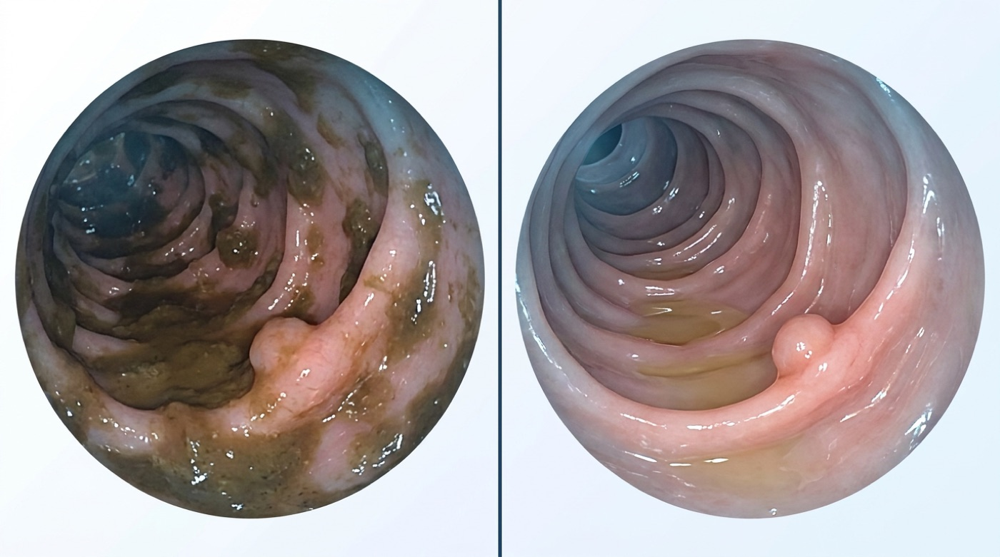

3일 준비 일정 — 검사 전 식사와 장정결제
3일 준비 일정 — 검사 전 식사와 장정결제
| 언제 | 먹어도 되는 것 · 할 일 | 피할 것 |
|---|---|---|
| 3일 전 찌꺼기 적은 식사 시작 |
흰밥, 흰빵, 두부, 계란, 닭가슴살, 흰살생선. 변비가 있는 분은 이 단계가 더 중요합니다. | 잡곡밥·현미·김치·해조류·견과류, 씨 있는 과일(포도·수박·참외·키위·딸기) |
| 1일 전 식사 줄이기 |
아침·점심은 흰죽·미음·두부 등 부드러운 음식. 저녁부터 금식 — 맑은 물·투명한 이온음료·맑은 사과주스만. 저녁에 1차 장정결제를 마십니다(시각은 예약 때 받은 복용 시간표대로). | 우유·과육 있는 주스·커피·붉은·보라색 음료 |
| 검사 당일 | 오전 검사는 새벽 4–5시경 2차 장정결제 복용(검사 4–5시간 전 완료 목표). 검사 30분 전 도착. | 수면내시경 뒤 운전(보호자 동반 필수) |
왜 깨끗이 비워야 할까요

대장내시경의 정확도는 장을 얼마나 깨끗이 비웠는지(장정결)가 결정합니다. 변이 남아 있으면 작은 용종을 놓칠 수 있습니다.
변 색깔 자가 체크 — ⑤ 맑은 노란 물에 도달하면 검사할 수 있습니다.
①짙은 갈색
②흐린 갈색
③노란 갈색
④노란 물
⑤맑은 노란 물
①~③ 아직 더 비워야 함 · ④ 거의 다 됨 · ⑤ 검사 가능
 평소 드시는 약 — 3가지로 나눠 확인하세요
평소 드시는 약 — 3가지로 나눠 확인하세요
| 약 | 검사 전 원칙 |
|---|---|
| 계속 복용 — 검사 당일 아침에도 소량의 물과 드십니다. | |
| 예약 때 받은 개별 지시대로 조정 — 금식 중에는 저혈당 위험이 있어 약마다 줄이거나 거르는 방법이 다릅니다. 스스로 끊거나 평소대로 맞지 마세요. 이름이 ‘-글리플로진’으로 끝나는 당뇨약(SGLT2 억제제)은 검사 3일 전부터 쉬는 경우가 많으니 예약 때 꼭 알려 주세요. | |
| 항혈전제 (아스피린·와파린 등) |
의료진과 상의 필수 — 스스로 끊지 마세요. 끊을지, 며칠 전 끊을지는 의료진이 정합니다. |
내원할 때
30분 전 도착(수액 주사 길을 잡을 시간) · 보호자 동반, 수면내시경 뒤 24시간 운전 금지 · 편한 옷차림, 귀중품 최소화 · 신분증·처방전·복용 약 목록 지참
함께 보기 — 저용량(1L) 장정결제 설명(진료실 자료): edu.gwanggyobarun.com/decks/gi/bowel-prep-low-volume/ · 항혈전제 복용자: edu.gwanggyobarun.com/handouts/endoscopy/antithrombotic-pre-endoscopy/